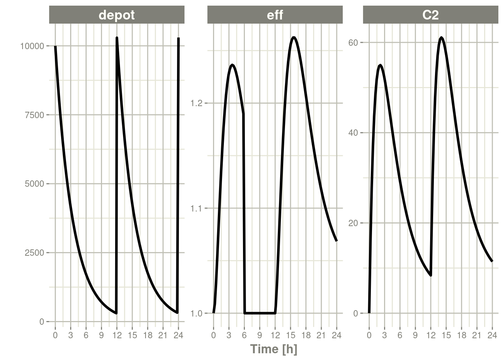
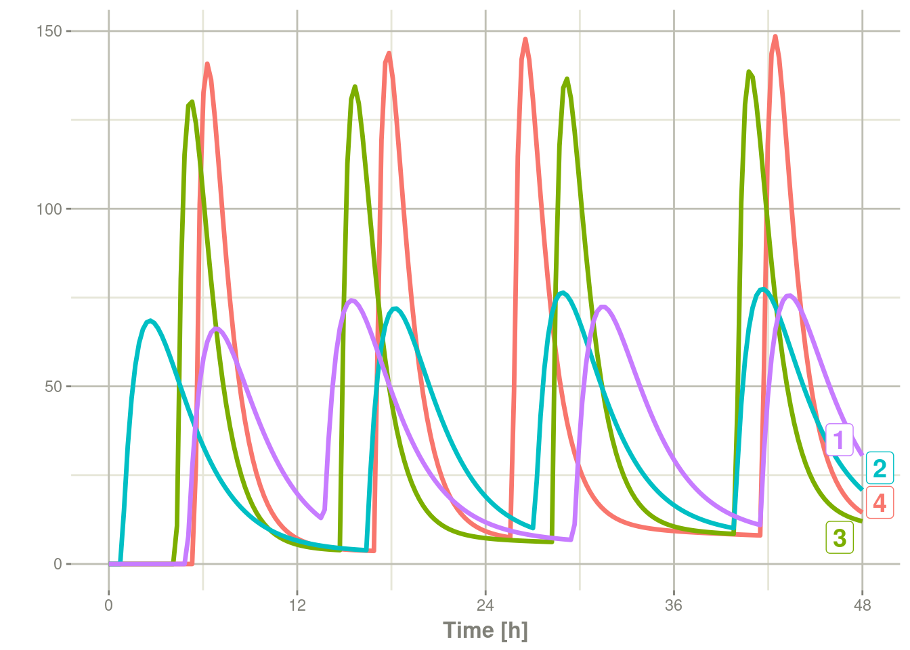

Chapter 7 Easily creating RxODE events
An event table in RxODE is a specialized data frame that acts as a container for all of RxODE’s events and observation times.
To create an RxODE event table you may use the code eventTable(),
et(), or even create your own data frame with the right event
information contained in it. This is closely related to the types of
events that RxODE supports.
library(RxODE)
(ev <- eventTable());#> ───────────────── EventTable with 0 records ────────────────
#>
#> 0 dosing records (see x$get.dosing(); add with add.dosing or et)
#> 0 observation times (see x$get.sampling(); add with add.sampling or et)or
(ev <- et());#> ───────────────── EventTable with 0 records ────────────────
#>
#> 0 dosing records (see x$get.dosing(); add with add.dosing or et)
#> 0 observation times (see x$get.sampling(); add with add.sampling or et)With this event table you can add sampling/observations or doses by piping or direct access.
This is a short table of the two main functions to create dosing
| add.dosing() | et() | Description |
|---|---|---|
| dose | amt | Dose/Rate/Duration amount |
| nbr.doses | addl | Additional doses or number of doses |
| dosing.interval | ii | Dosing Interval |
| dosing.to | cmt | Dosing Compartment |
| rate | rate | Infusion rate |
| start.time | time | Dosing start time |
| dur | Infusion Duration |
Sampling times can be added with add.sampling( sampling times ) or
et( sampling times ). Dosing intervals and sampling
windows are also
supported.
For these models, we can illustrate by using the model shared in the RxODE tutorial:
## Model from RxODE tutorial
m1 <-RxODE({
KA=2.94E-01;
CL=1.86E+01;
V2=4.02E+01;
Q=1.05E+01;
V3=2.97E+02;
Kin=1;
Kout=1;
EC50=200;
## Added modeled bioavaiblity, duration and rate
fdepot = 1;
durDepot = 8;
rateDepot = 1250;
C2 = centr/V2;
C3 = peri/V3;
d/dt(depot) =-KA*depot;
f(depot) = fdepot
dur(depot) = durDepot
rate(depot) = rateDepot
d/dt(centr) = KA*depot - CL*C2 - Q*C2 + Q*C3;
d/dt(peri) = Q*C2 - Q*C3;
d/dt(eff) = Kin - Kout*(1-C2/(EC50+C2))*eff;
eff(0) = 1
})7.1 Adding doses to the event table
Once created you can add dosing to the event table by the
add.dosing(), and et() functions.
Using the add.dosing() function you have:
| argument | meaning |
|---|---|
| dose | dose amount |
| nbr.doses | Number of doses; Should be at least 1. |
| dosing.interval | Dosing interval; By default this is 24. |
| dosing.to | Compartment where dose is administered. |
| rate | Infusion rate |
| start.time | The start time of the dose |
ev <- eventTable(amount.units="mg", time.units="hr")
## The methods ar attached to the event table, so you can use them
## directly
ev$add.dosing(dose=10000, nbr.doses = 3)# loading doses
## Starts at time 0; Default dosing interval is 24
## You can also pipe the event tables to these methods.
ev <- ev %>%
add.dosing(dose=5000, nbr.doses=14, dosing.interval=12)# maintenance
ev#> ───────────────── EventTable with 2 records ────────────────
#>
#> 2 dosing records (see x$get.dosing(); add with add.dosing or et)
#> 0 observation times (see x$get.sampling(); add with add.sampling or et)
#> multiple doses in `addl` columns, expand with x$expand(); or etExpand(x)
#> ── First part of x: ────────────────────────────────────────
#> # A tibble: 2 x 5
#> time amt ii addl evid
#> [h] [mg] [h] <int> <evid>
#> 1 0 10000 24 2 1:Dose (Add)
#> 2 0 5000 12 13 1:Dose (Add)Notice that the units were specified in the table. When specified, the
units use the units package to keep track of the units and convert
them if needed. Additionally, ggforce uses them to label the
ggplot axes. The set_units and drop_units are useful to set and
drop the RxODE event table units.
In this example, you can see the time axes is labeled:
rxSolve(m1, ev) %>% plot(C2)
If you are more familiar with the NONMEM/RxODE event records, you can
also specify dosing using et with the dose elements directly:
ev <- et(timeUnits="hr") %>%
et(amt=10000, until = set_units(3, days), ii=12) # loading doses
ev#> ───────────────── EventTable with 1 records ────────────────
#>
#> 1 dosing records (see x$get.dosing(); add with add.dosing or et)
#> 0 observation times (see x$get.sampling(); add with add.sampling or et)
#> multiple doses in `addl` columns, expand with x$expand(); or etExpand(x)
#> ── First part of x: ────────────────────────────────────────
#> # A tibble: 1 x 5
#> time amt ii addl evid
#> [h] <dbl> [h] <int> <evid>
#> 1 0 10000 12 6 1:Dose (Add)Which gives:
rxSolve(m1, ev) %>% plot(C2)
This shows how easy creating event tables can be.
7.2 Adding sampling to an event table
If you notice in the above examples, RxODE generated some default
sampling times since there was not any sampling times. If you wish
more control over the sampling time, you should add the samples to the
RxODE event table by add.sampling or et
ev <- eventTable(amount.units="mg", time.units="hr")
## The methods ar attached to the event table, so you can use them
## directly
ev$add.dosing(dose=10000, nbr.doses = 3)# loading doses
ev$add.sampling(seq(0,24,by=4))
ev#> ───────────────── EventTable with 8 records ────────────────
#>
#> 1 dosing records (see x$get.dosing(); add with add.dosing or et)
#> 7 observation times (see x$get.sampling(); add with add.sampling or et)
#> multiple doses in `addl` columns, expand with x$expand(); or etExpand(x)
#> ── First part of x: ────────────────────────────────────────
#> # A tibble: 8 x 5
#> time amt ii addl evid
#> [h] [mg] [h] <int> <evid>
#> 1 0 NA NA NA 0:Observation
#> 2 0 10000 24 2 1:Dose (Add)
#> 3 4 NA NA NA 0:Observation
#> 4 8 NA NA NA 0:Observation
#> 5 12 NA NA NA 0:Observation
#> 6 16 NA NA NA 0:Observation
#> 7 20 NA NA NA 0:Observation
#> 8 24 NA NA NA 0:ObservationWhich gives:
solve(m1, ev) %>% plot(C2)
Or if you use et you can simply add them in a similar way to add.sampling:
ev <- et(timeUnits="hr") %>%
et(amt=10000, until = set_units(3, days), ii=12) %>% # loading doses
et(seq(0,24,by=4))
ev#> ───────────────── EventTable with 8 records ────────────────
#>
#> 1 dosing records (see x$get.dosing(); add with add.dosing or et)
#> 7 observation times (see x$get.sampling(); add with add.sampling or et)
#> multiple doses in `addl` columns, expand with x$expand(); or etExpand(x)
#> ── First part of x: ────────────────────────────────────────
#> # A tibble: 8 x 5
#> time amt ii addl evid
#> [h] <dbl> [h] <int> <evid>
#> 1 0 NA NA NA 0:Observation
#> 2 0 10000 12 6 1:Dose (Add)
#> 3 4 NA NA NA 0:Observation
#> 4 8 NA NA NA 0:Observation
#> 5 12 NA NA NA 0:Observation
#> 6 16 NA NA NA 0:Observation
#> 7 20 NA NA NA 0:Observation
#> 8 24 NA NA NA 0:Observationwhich gives the following RxODE solve:
solve(m1, ev) %>% plot(C2)
Note the jagged nature of these plots since there was only a few sample times.
7.3 Expand the event table to a multi-subject event table.
The only thing that is needed to expand an event table is a list of IDs that you want to expand;
ev <- et(timeUnits="hr") %>%
et(amt=10000, until = set_units(3, days), ii=12) %>% # loading doses
et(seq(0,48,length.out=200)) %>%
et(id=1:4)
ev#> ──────────────── EventTable with 804 records ───────────────
#> 4 individuals
#> 4 dosing records (see x$get.dosing(); add with add.dosing or et)
#> 800 observation times (see x$get.sampling(); add with add.sampling or et)
#> multiple doses in `addl` columns, expand with x$expand(); or etExpand(x)
#> ── First part of x: ────────────────────────────────────────
#> # A tibble: 804 x 6
#> id time amt ii addl evid
#> <int> [h] <dbl> [h] <int> <evid>
#> 1 1 0.0000000 NA NA NA 0:Observation
#> 2 1 0.0000000 10000 12 6 1:Dose (Add)
#> 3 1 0.2412060 NA NA NA 0:Observation
#> 4 1 0.4824121 NA NA NA 0:Observation
#> 5 1 0.7236181 NA NA NA 0:Observation
#> 6 1 0.9648241 NA NA NA 0:Observation
#> 7 1 1.2060302 NA NA NA 0:Observation
#> 8 1 1.4472362 NA NA NA 0:Observation
#> 9 1 1.6884422 NA NA NA 0:Observation
#> 10 1 1.9296482 NA NA NA 0:Observation
#> # … with 794 more rowsYou can see in the following simulation there are 4 individuals that are solved for:
set.seed(42)
solve(m1, ev,
params=data.frame(KA=0.294*exp(rnorm(4)), 18.6*exp(rnorm(4)))) %>%
plot(C2)#> Warning: 'ID' missing in 'parameters' dataset
#> individual parameters are assumed to have the same order as the event dataset
7.4 Add doses and samples within a sampling window
In addition to adding fixed doses and fixed sampling times, you can have windows where you sample and draw doses from. For dosing windows you specify the time as an ordered numerical vector with the lowest dosing time and the highest dosing time inside a list.
In this example, you start with a dosing time with a 6 hour dosing window:
set.seed(42)
ev <- et(timeUnits="hr") %>%
et(time=list(c(0,6)), amt=10000, until = set_units(2, days), ii=12) %>% # loading doses
et(id=1:4)
ev#> ──────────────── EventTable with 16 records ────────────────
#> 4 individuals
#> 16 dosing records (see x$get.dosing(); add with add.dosing or et)
#> 0 observation times (see x$get.sampling(); add with add.sampling or et)
#> ── First part of x: ────────────────────────────────────────
#> # A tibble: 16 x 6
#> id low time high amt evid
#> <int> [h] [h] [h] <dbl> <evid>
#> 1 1 0 5.4888363 6 10000 1:Dose (Add)
#> 2 1 12 16.9826858 18 10000 1:Dose (Add)
#> 3 1 24 25.7168372 30 10000 1:Dose (Add)
#> 4 1 36 41.6224525 42 10000 1:Dose (Add)
#> 5 2 0 4.3146735 6 10000 1:Dose (Add)
#> 6 2 12 14.7464507 18 10000 1:Dose (Add)
#> 7 2 24 28.2303887 30 10000 1:Dose (Add)
#> 8 2 36 39.9419537 42 10000 1:Dose (Add)
#> 9 3 0 0.8079996 6 10000 1:Dose (Add)
#> 10 3 12 16.4195299 18 10000 1:Dose (Add)
#> 11 3 24 27.1145757 30 10000 1:Dose (Add)
#> 12 3 36 39.8504731 42 10000 1:Dose (Add)
#> 13 4 0 4.9826858 6 10000 1:Dose (Add)
#> 14 4 12 13.7168372 18 10000 1:Dose (Add)
#> 15 4 24 29.6224525 30 10000 1:Dose (Add)
#> 16 4 36 41.4888363 42 10000 1:Dose (Add)You can clearly see different dosing times in the following simulation:
ev <- ev %>% et(seq(0,48,length.out=200))
solve(m1, ev, params=data.frame(KA=0.294*exp(rnorm(4)), 18.6*exp(rnorm(4)))) %>% plot(C2)#> Warning: 'ID' missing in 'parameters' dataset
#> individual parameters are assumed to have the same order as the event dataset
Of course in reality the dosing interval may only be 2 hours:
set.seed(42)
ev <- et(timeUnits="hr") %>%
et(time=list(c(0,2)), amt=10000, until = set_units(2, days), ii=12) %>% # loading doses
et(id=1:4) %>%
et(seq(0,48,length.out=200))
solve(m1, ev, params=data.frame(KA=0.294*exp(rnorm(4)), 18.6*exp(rnorm(4)))) %>% plot(C2)#> Warning: 'ID' missing in 'parameters' dataset
#> individual parameters are assumed to have the same order as the event datasetThe same sort of thing can be specified with sampling times. To specify the sampling times in terms of a sampling window, you can create a list of the sampling times. Each sampling time will be a two element ordered numeric vector.
set.seed(42)
ev <- et(timeUnits="hr") %>%
et(time=list(c(0,2)), amt=10000, until = set_units(2, days), ii=12) %>% # loading doses
et(id=1:4)
## Create 20 samples in the first 24 hours and 20 samples in the second 24 hours
samples <- c(lapply(1:20, function(...){c(0,24)}),
lapply(1:20, function(...){c(20,48)}))
## Add the random collection to the event table
ev <- ev %>% et(samples)
library(ggplot2)
solve(m1, ev, params=data.frame(KA=0.294*exp(rnorm(4)), 18.6*exp(rnorm(4)))) %>% plot(C2) + geom_point()#> Warning: 'ID' missing in 'parameters' dataset
#> individual parameters are assumed to have the same order as the event dataset
This shows the flexibility in dosing and sampling that the RxODE event tables allow.
7.5 Combining event tables
Since you can create dosing records and sampling records, you can
create any complex dosing regimen you wish. In addition, RxODE allows
you to combine event tables by c, seq, rep, and rbind.
7.6 Sequencing event tables
One way to combine event table is to sequence them by c, seq or
etSeq. This takes the two dosing groups and adds at least one
inter-dose interval between them:
## bid for 5 days
bid <- et(timeUnits="hr") %>%
et(amt=10000,ii=12,until=set_units(5, "days"))
## qd for 5 days
qd <- et(timeUnits="hr") %>%
et(amt=20000,ii=24,until=set_units(5, "days"))
## bid for 5 days followed by qd for 5 days
et <- seq(bid,qd) %>% et(seq(0,11*24,length.out=100));
rxSolve(m1, et) %>% plot(C2)
When sequencing events, you can also separate this sequence by a period of time; For example if you wanted to separate this by a week, you could easily do that with the following sequence of event tables:
## bid for 5 days followed by qd for 5 days
et <- seq(bid,set_units(1, "week"), qd) %>%
et(seq(0,18*24,length.out=100));
rxSolve(m1, et) %>% plot(C2)
Note that in this example the time between the bid and the qd event
tables is exactly one week, not 1 week plus 24 hours because of the
inter-dose interval. If you want that behavior, you can sequence it
using the wait="+ii".
## bid for 5 days followed by qd for 5 days
et <- seq(bid,set_units(1, "week"), qd,wait="+ii") %>%
et(seq(0,18*24,length.out=100));
rxSolve(m1, et) %>% plot(C2)Also note, that RxODE assumes that the dosing is what you want to
space the event tables by, and clears out any sampling records when
you combine the event tables. If that is not true, you can also use
the option samples="use"
7.7 Repeating event tables
You can have an event table that you can repeat with etRep or rep.
For example 4 rounds of 2 weeks on QD therapy and 1 week off of
therapy can be simply specified:
qd <-et(timeUnits = "hr") %>% et(amt=10000, ii=24, until=set_units(2, "weeks"), cmt="depot")
et <- rep(qd, times=4, wait=set_units(1,"weeks")) %>%
add.sampling(set_units(seq(0, 12.5,by=0.005),weeks))
rxSolve(m1, et) %>% plot(C2)
This is a simplified way to use a sequence of event tables.
Therefore, many of the same options still apply; That is samples are
cleared unless you use samples="use", and the time between event
tables is at least the inter-dose interval. You can adjust the timing
by the wait option.
7.8 Combining event tables with rbind
You may combine event tables with rbind. This does not consider the
event times when combining the event tables, but keeps them the same
times. If you space the event tables by a waiting period, it also does
not consider the inter-dose interval.
Using the previous seq you can clearly see the difference. Here was the sequence:
## bid for 5 days
bid <- et(timeUnits="hr") %>%
et(amt=10000,ii=12,until=set_units(5, "days"))
## qd for 5 days
qd <- et(timeUnits="hr") %>%
et(amt=20000,ii=24,until=set_units(5, "days"))
et <- seq(bid,qd) %>%
et(seq(0,18*24,length.out=500));
rxSolve(m1, et) %>% plot(C2)
But if you bind them together with rbind
## bid for 5 days
et <- rbind(bid,qd) %>%
et(seq(0,18*24,length.out=500));
rxSolve(m1, et) %>% plot(C2)Still the waiting period applies (but does not consider the inter-dose interval)
et <- rbind(bid,wait=set_units(10,days),qd) %>%
et(seq(0,18*24,length.out=500));
rxSolve(m1, et) %>% plot(C2)You can also bind the tables together and make each ID in the event
table unique; This can be good to combine cohorts with different
expected dosing and sampling times. This requires the id="unique"
option; Using the first example shows how this is different in this case:
## bid for 5 days
et <- etRbind(bid,qd, id="unique") %>%
et(seq(0,150,length.out=500));
library(ggplot2)
rxSolve(m1, et) %>% plot(C2) + facet_wrap( ~ id)